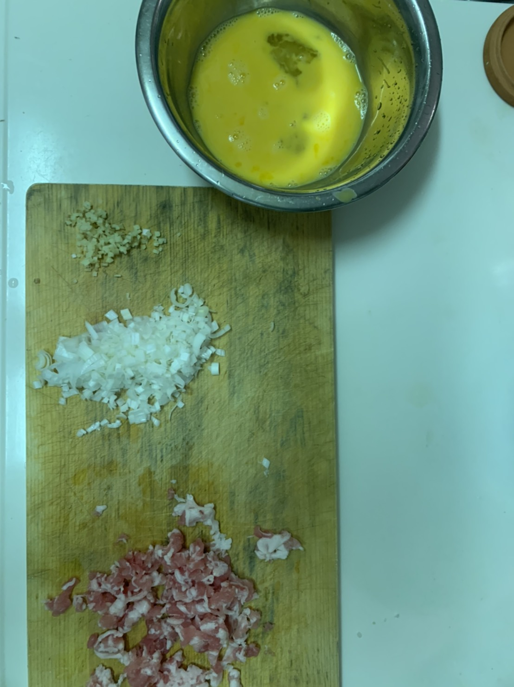

チャーハン

忙しい時でも時間をかけずに作れるチャーハン
簡単な材料で作れる
家で作れる本格的なチャーハン
使う食材
- 豚バラ肉 50g
- 卵2個
- 生姜3g
- 長ネギ5cm
- ご飯1人前
- 塩小さじ半分
- 酒大さじ1
- 味の素8振り
- サラダ油大さじ1.5

1
卵二つを溶く
生姜、長ネギをみじん切りにする
肉は米粒くらいの大きさに切る
2
フライパンにサラダ油を敷く
まず、肉を炒める（少し焦げ目がつくくらい）
その後、肉と油を分け、
油に生姜と溶き卵、ご飯を入れる
3
炒める
4
ある程度炒めたら長ネギを入れる
5
再びある程度炒めたら、調味料をすべて入れ、
さらに炒める（味が偏らないように！）
お好みで黒故障を入れてもOK
6
盛り付けて完成